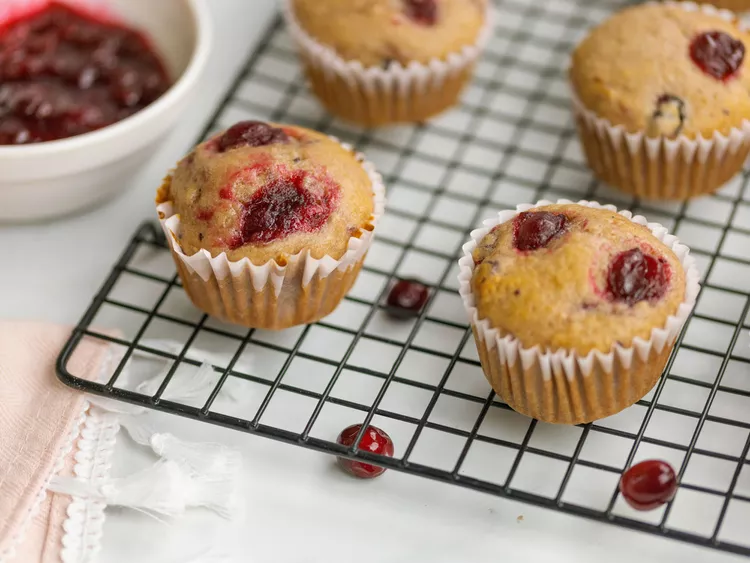

Leftover cranberry sauce is obviously great on turkey sandwiches, and it's even delicious warmed up and spooned over ice cream or pancakes, but have you tried it in muffins? This easy recipe for cranberry muffins uses a cup of your smooth or chunky leftover cranberry sauce. The batter comes together in minutes and the moist, sweet muffins are perfect for a post-Thanksgiving breakfast or snack
Ingredients
- All-Purpose Flour (475 mL)
- Sugar: White and Brown (60 mL and 120 mL respectively)
- Baking Powder (15 mL)
- Cinnamon (5 mL)
- Salt (5 mL)
- Vanilla Extract (20 mL)
- Cardamom (5 mL)
- Cranberry Sauce (250 mL)
- Whole Milk (175 mL)
- Vegetable Oil (60 mL)
- One Whole Egg
Steps
- Preheat oven to 400 degrees F
- Mix All Wet Ingredients Together: Beat Cranberry Sauce, Milk Oil, Egg, and Vanilla Extract until combined.
- Mix All Dry Ingredients Together: Mix remaining ingredients in a separate bowl, then slowly pour and incorporate the dry mixture into the wet mixture ingredients.
- Bake the Muffins: Pour the batter into lined muffin cups and bake in a preheated oven until the muffins are golden brown (20 minutes).
- Let cool and serve!
Back to Top
Back to Main Page